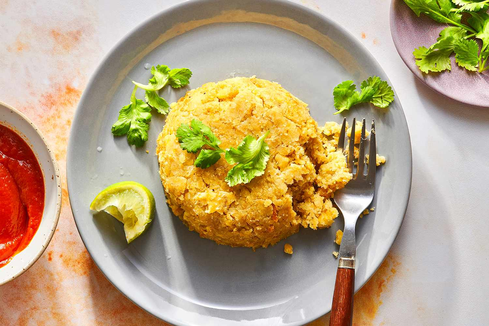

Mofongo

Description
Plantain mofongo is thought to originate in Puerto Rico, and is a dish made from fried green (unripe) plantains mashed together with garlic and crackling pork rinds, also known as chicharrón. To make mofongo, the plantains are sliced and fried until tender, and then mashed with garlic paste and pork cracklings. The mixture can either be formed into balls or a half-dome shape. Mofongo is traditionally mashed in a mortar and pestle, but you can use a potato masher if you don't have one.
Ingredients
- 3 Medium Green Plantains
- Vegetable Oil
- 1 Tablespoon of Garlic Paste
- 6 Ounces of Pork Rinds or Cracklings, crushed
- Kosher Salt, to taste
Steps
- Gather the ingredients.
- Heat about 2 inches of oil over medium-high heat in a large skillet or deep fryer to 350 F.
- While the oil is heating up, peel the plantains and cut into 1-inch rounds.
- Fry the plantains until golden and tender, 4 to 6 minutes.
- Remove cooked plantains from the pan or fryer to a paper-towel-lined plate.
- Put the garlic paste in a large bowl or mortar and add the fried plantains, in batches, if necessary. Mash thoroughly.
- Add the pork rinds. Continue to mash and mix until all of the ingredients are combined. Add salt to taste.
- Shape the mofongo into 4 balls and serve.
- Alternatively, you can make the mofongo into a half-dome shape using a small condiment bowl as a mold; push a portion of mofongo down to the bottom of the bowl.
- With the back of a spoon, smooth over and level off the mix.
- Then use the spoon to scrape around the bowl and remove the mash in a half-dome shape.